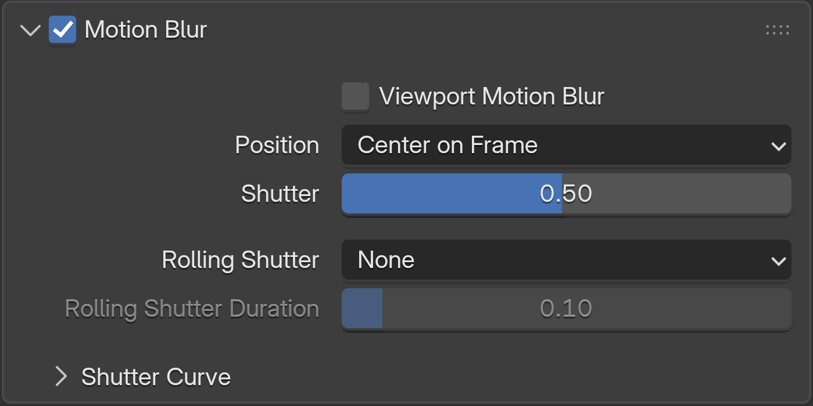

I finally got viewport motion blur working!
I have wanted this in Blender for a long time. Motion blur changes how an animation feels, so being able to see it interactively while I work makes a huge difference.
Cycles After Hours is my personal project where I experiment with features I would love to see in Cycles. Viewport Motion Blur is the first feature I wanted to tackle, and I wanted to do it properly using the real Cycles motion blur system.
No compositor tricks
No vector pass
No screen-space approximation
See motion before you render
See the blur update while you play your animation in the Rendered Viewport, without waiting for a final render.
Live Transform Preview
Move an animated object on an unkeyed frame and the motion blur updates immediately. You can shape the motion before adding another keyframe.
Motion Steps
Cycles Motion Steps update directly in the viewport, so you can see how extra steps affect the blur.
Supported Cycles features
- Live Transform Preview
- Camera Motion
- Deformation Motion
- Motion Steps
- Shutter Position
- Rolling Shutter
- Volume Motion Blur
- Particles & Points
- CUDA / OptiX
Try it in Blender
It's a custom Blender/Cycles build, not an addon. Download the ZIP, extract it and run Blender.
- Download
Get the current Windows build. - Extract
Unzip it wherever you like. - Launch Blender
Start blender.exe like any other portable Blender build. - Enable Viewport Motion Blur
Enable Motion Blur and Viewport Motion Blur in the Cycles render settings.
Existing .blend files remain normal Blender files.

Documentation
- Getting StartedInstall the build and enable Viewport Motion Blur.
- Project DetailsCurrent build, download and source information.
- Release NotesChanges in v0.2.1.
- Source CodeSource archive, patches and build information.
- View on GitHubBrowse the project repository.
- Report an IssueGitHub issue tracker.